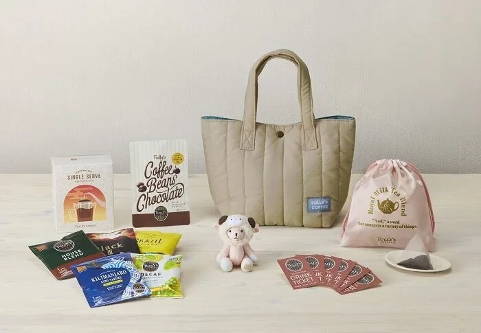
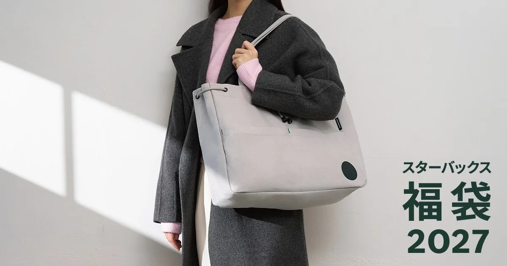
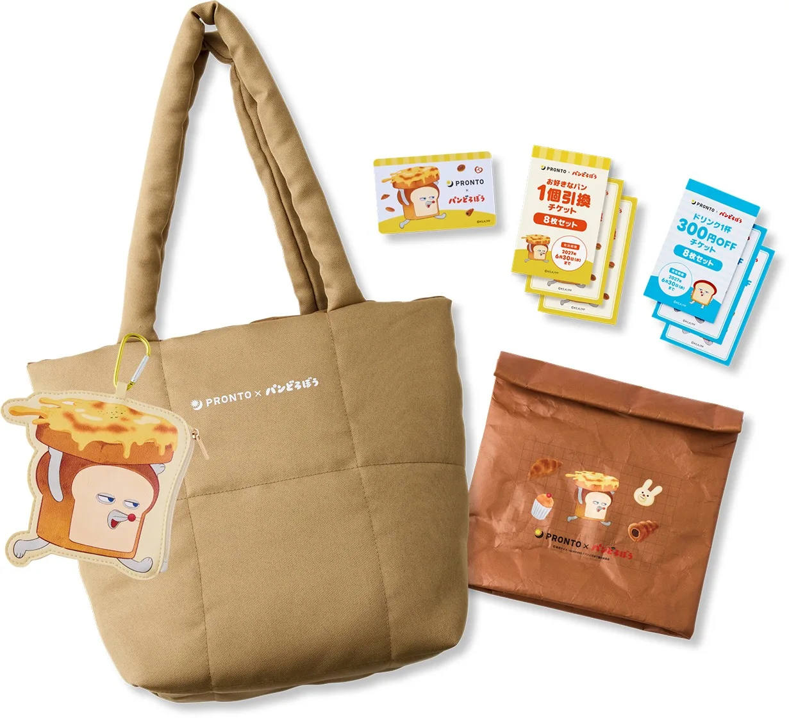
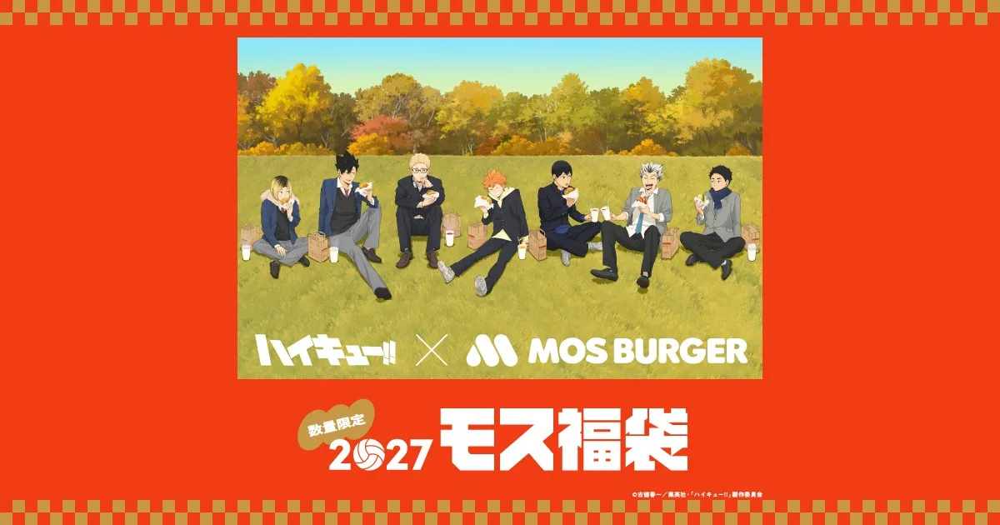
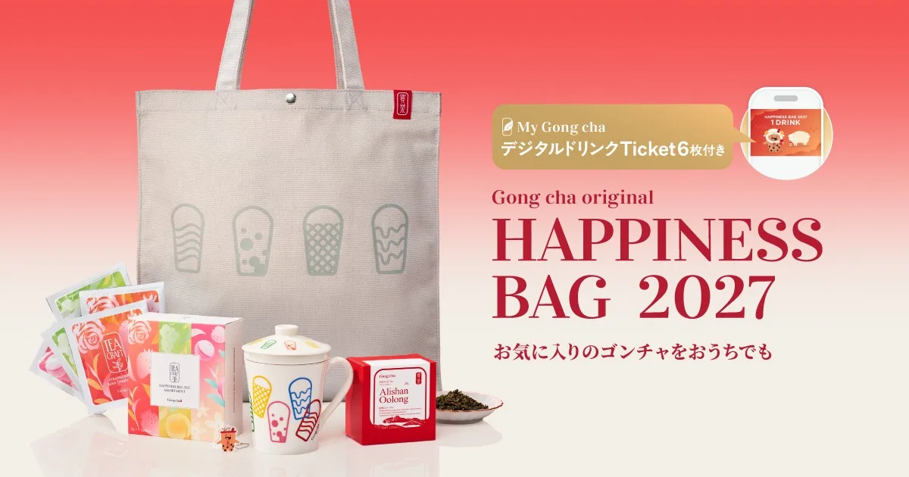

OTOKUBOY — お金・トラベル・福袋・初売りの記事
お金

MONEY
締切と最安が一目でわかる、お金の早見表。ふるさと納税・セール・ポイント・税と制度・スマホ料金。
企業
解説

BUSINESS
あの会社はなぜ儲かるのか。決算と公式資料から、もうけのしくみを分解します。
資格
解説

LICENSE
資格試験のしくみと出るところを、マルバツで覚える。まずは FP3級から。
トラベル

TRAVEL
おすすめの宿、旅先の見どころ、セールやマイルなど、旅の計画と予約に役立つ情報をまとめます。
特集

FEATURE
福袋の中身・予約・抽選と、初売りの期間・条件をブランドごとに紹介します。
アプリ

APPS
つくっているアプリの紹介とアップデート。ダイビングゲーム・お酒図鑑・筋トレクエスト・Tabi Note。
NEW新着の記事
27本
セルフメディケーション税制医療費控除と比較控除額で選ぶ 2026-11-23・税・制度・NISAセルフメディケーション税制と医療費控除の違い、控除額で選ぶ方法
2026-11-23・税・制度・NISAセルフメディケーション税制と医療費控除の違い、控除額で選ぶ方法 2026-11-22・福袋12月1日10時予約UCC福袋2027は公式通販で4種完売、次の予約は12月1日
2026-11-22・福袋12月1日10時予約UCC福袋2027は公式通販で4種完売、次の予約は12月1日 2026-11-22・おすすめホテル仙台駅東口直結ホテルメトロポリタン仙台イーストのアクセスと客室の選び方
2026-11-22・おすすめホテル仙台駅東口直結ホテルメトロポリタン仙台イーストのアクセスと客室の選び方 2026-11-22・福袋店頭予約12月25日ドトール福袋2027の予約はいつまで？シナモロールなど全9種スマホの乗り換え（MNP）手数料は無料
2026-11-22・福袋店頭予約12月25日ドトール福袋2027の予約はいつまで？シナモロールなど全9種スマホの乗り換え（MNP）手数料は無料 2026-11-21・スマホ・通信携帯電話の乗り換えMNP、やり方と手数料ふるさと納税12月31日まで年内に支払い完了2026-11-21・ふるさと納税ふるさと納税、12月31日までにやることクレジットカード締め日・支払日カード会社3社を比較
2026-11-21・スマホ・通信携帯電話の乗り換えMNP、やり方と手数料ふるさと納税12月31日まで年内に支払い完了2026-11-21・ふるさと納税ふるさと納税、12月31日までにやることクレジットカード締め日・支払日カード会社3社を比較 2026-11-21・クレジットカードクレジットカードの締め日・支払い日、3社で比較Amazon × d払い100%還元抽選5,000名・12/7まで2026-11-21・ポイント・還元Amazonのd払い100%還元、上限5,000ptは抽選5,000名
2026-11-21・クレジットカードクレジットカードの締め日・支払い日、3社で比較Amazon × d払い100%還元抽選5,000名・12/7まで2026-11-21・ポイント・還元Amazonのd払い100%還元、上限5,000ptは抽選5,000名 2026-11-20・旅記録無料Tabi Note とは？ 行った場所を地図に塗って残すアプリの使い方2026-11-20・お酒無料・登録不要お酒図鑑とは？飲んだお酒を記録して図鑑を埋めるアプリの使い方
2026-11-20・旅記録無料Tabi Note とは？ 行った場所を地図に塗って残すアプリの使い方2026-11-20・お酒無料・登録不要お酒図鑑とは？飲んだお酒を記録して図鑑を埋めるアプリの使い方 2026-11-20・ダイビング2つの海が無料Ocean Discovery とは？沖縄の海をもぐるダイビングゲームの遊び方2026-11-20・筋トレ無料筋トレクエストとは？ 筋トレを記録すると勇者が育つアプリの使い方12月の電気・ガス代値上げと補助金世帯別に試算2026-11-20・税・制度・NISA電気ガス補助金はいつまで？12月の値上げと合わせ世帯別に試算
2026-11-20・ダイビング2つの海が無料Ocean Discovery とは？沖縄の海をもぐるダイビングゲームの遊び方2026-11-20・筋トレ無料筋トレクエストとは？ 筋トレを記録すると勇者が育つアプリの使い方12月の電気・ガス代値上げと補助金世帯別に試算2026-11-20・税・制度・NISA電気ガス補助金はいつまで？12月の値上げと合わせ世帯別に試算 2026-11-20・ビジネスモデル営業利益の約半分が会費コストコはなぜ安いのに儲かるのか 営業利益の約半分は会費サンリオ福袋20274,990円全7キャラ共通
2026-11-20・ビジネスモデル営業利益の約半分が会費コストコはなぜ安いのに儲かるのか 営業利益の約半分は会費サンリオ福袋20274,990円全7キャラ共通 2026-11-20・福袋・セールサンリオ福袋2027は全7キャラ4,990円で1人交代ゴディバ福袋2027価格据え置き中身が異なる全3種2026-11-20・福袋・セールゴディバ福袋2027は3種類、価格据え置きでも中身は変化Amazonブラックフライデー本番は8日間7つのセール企画2026-11-20・福袋・セールAmazonブラックフライデー2026、7つの企画の買い方新NISAの年内枠現金積立の締切SBI 12/16・楽天 12/172026-11-19・税・制度・NISA新NISAの年内枠を使い切る手順｜クレカ積立の締切後でも間に合う方法
2026-11-20・福袋・セールサンリオ福袋2027は全7キャラ4,990円で1人交代ゴディバ福袋2027価格据え置き中身が異なる全3種2026-11-20・福袋・セールゴディバ福袋2027は3種類、価格据え置きでも中身は変化Amazonブラックフライデー本番は8日間7つのセール企画2026-11-20・福袋・セールAmazonブラックフライデー2026、7つの企画の買い方新NISAの年内枠現金積立の締切SBI 12/16・楽天 12/172026-11-19・税・制度・NISA新NISAの年内枠を使い切る手順｜クレカ積立の締切後でも間に合う方法 2026-11-18・試験概要・受験手続き合格率は8割超FP3級の試験のしくみ・費用・日程まとめ 合格ラインは6割
2026-11-18・試験概要・受験手続き合格率は8割超FP3級の試験のしくみ・費用・日程まとめ 合格ラインは6割
2026-11-23・税・制度・NISAセルフメディケーション税制と医療費控除の違い、控除額で選ぶ方法2026-11-22・福袋12月1日10時予約UCC福袋2027は公式通販で4種完売、次の予約は12月1日
2026-11-22・福袋12月10日予約締切タリーズ福袋2027の予約は12月10日まで、中身と店頭受取
2026-11-22・福袋11月25日当選発表スターバックス福袋2027は受付終了、当選発表日と決済期限2026-11-22・おすすめホテル仙台駅東口直結ホテルメトロポリタン仙台イーストのアクセスと客室の選び方
2026-11-22・福袋12月20日予約期限プロント福袋2027の予約は12月20日まで、パンどろぼうの中身
2026-11-22・福袋11月25日15時モスバーガー福袋2027は11月25日予約開始、受取日と中身2026-11-22・旅行先ガイド駅から徒歩観光松島観光の徒歩モデルコース、松島海岸駅から瑞巌寺と五大堂へ2026-11-22・福袋通販抽選11月30日カルディ福袋2027の抽選はいつまで？オンラインと店頭の申込方法
2026-11-22・福袋公式で完売ゴンチャ福袋2027は完売、購入済みの方の配送日とチケットふるさと納税の上限額所得割額の2割特例控除の上限2026-11-22・ふるさと納税ふるさと納税の上限額、計算方法を総務省の公式資料で確認2026-11-22・福袋店頭予約12月25日ドトール福袋2027の予約はいつまで？シナモロールなど全9種スマホの乗り換え（MNP）手数料は無料2026-11-21・スマホ・通信携帯電話の乗り換えMNP、やり方と手数料ふるさと納税12月31日まで年内に支払い完了2026-11-21・ふるさと納税ふるさと納税、12月31日までにやることクレジットカード締め日・支払日カード会社3社を比較2026-11-21・クレジットカードクレジットカードの締め日・支払い日、3社で比較Amazon × d払い100%還元抽選5,000名・12/7まで2026-11-21・ポイント・還元Amazonのd払い100%還元、上限5,000ptは抽選5,000名2026-11-20・旅記録無料Tabi Note とは？ 行った場所を地図に塗って残すアプリの使い方2026-11-20・お酒無料・登録不要お酒図鑑とは？飲んだお酒を記録して図鑑を埋めるアプリの使い方2026-11-20・ダイビング2つの海が無料Ocean Discovery とは？沖縄の海をもぐるダイビングゲームの遊び方2026-11-20・筋トレ無料筋トレクエストとは？ 筋トレを記録すると勇者が育つアプリの使い方12月の電気・ガス代値上げと補助金世帯別に試算2026-11-20・税・制度・NISA電気ガス補助金はいつまで？12月の値上げと合わせ世帯別に試算2026-11-20・ビジネスモデル営業利益の約半分が会費コストコはなぜ安いのに儲かるのか 営業利益の約半分は会費サンリオ福袋20274,990円全7キャラ共通2026-11-20・福袋・セールサンリオ福袋2027は全7キャラ4,990円で1人交代ゴディバ福袋2027価格据え置き中身が異なる全3種2026-11-20・福袋・セールゴディバ福袋2027は3種類、価格据え置きでも中身は変化Amazonブラックフライデー本番は8日間7つのセール企画2026-11-20・福袋・セールAmazonブラックフライデー2026、7つの企画の買い方新NISAの年内枠現金積立の締切SBI 12/16・楽天 12/172026-11-19・税・制度・NISA新NISAの年内枠を使い切る手順｜クレカ積立の締切後でも間に合う方法2026-11-18・試験概要・受験手続き合格率は8割超FP3級の試験のしくみ・費用・日程まとめ 合格ラインは6割